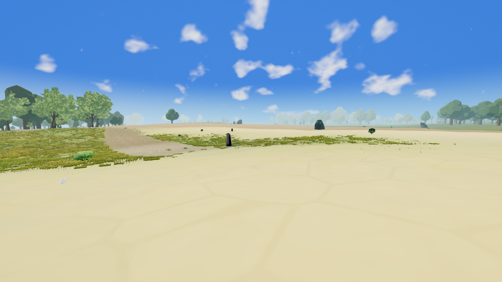
random-01 · Hot desert
procedural · camera-cell biome 1 · X 7115, Z 49 · player · fully settled
Original clean PNG · HUD PNG18 fresh views: twelve randomly sampled land biomes, two coastal supplements, and four seeded choices of Eldara fixtures.
Frozen source 52914b15 · hardware NVIDIA Lovelace WebGPU · 1600 × 900 · Highfield noon · no grading or retouching. Wind and particles remain live. Capture validity is not a visual-quality pass.
Known defect: the tree atlas signature is rejected at startup. These captures document current appearance, including fallback trees; they are not release acceptance. See the plan and tree-atlas-probe.json.

procedural · camera-cell biome 1 · X 7115, Z 49 · player · fully settled
Original clean PNG · HUD PNG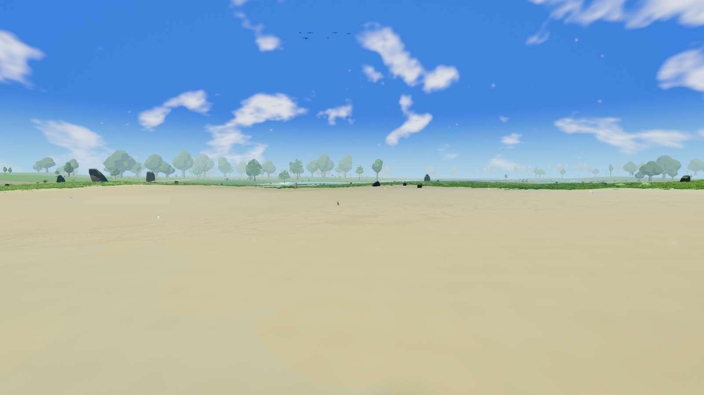
procedural · camera-cell biome 2 · X -985, Z -3371 · player · fully settled
Original clean PNG · HUD PNG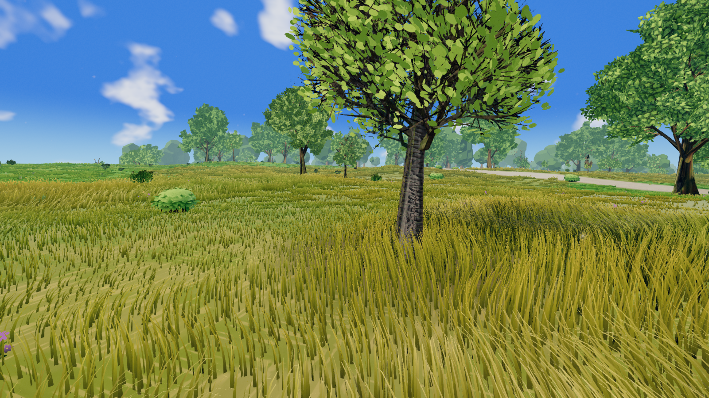
procedural · camera-cell biome 3 · X 4963, Z 5601 · player · fully settled
Original clean PNG · HUD PNG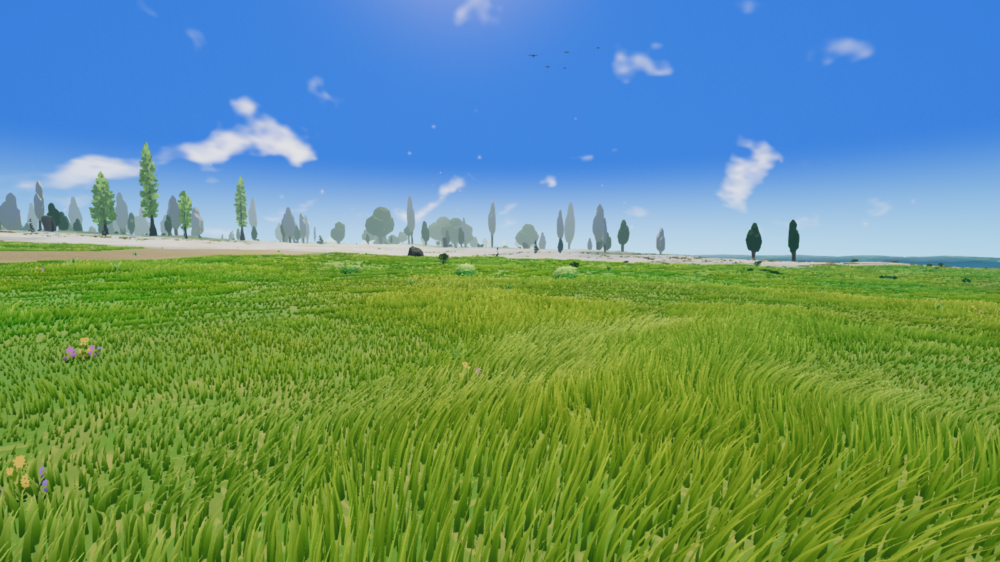
procedural · camera-cell biome 4 · X -1857, Z -6905 · player · fully settled
Original clean PNG · HUD PNG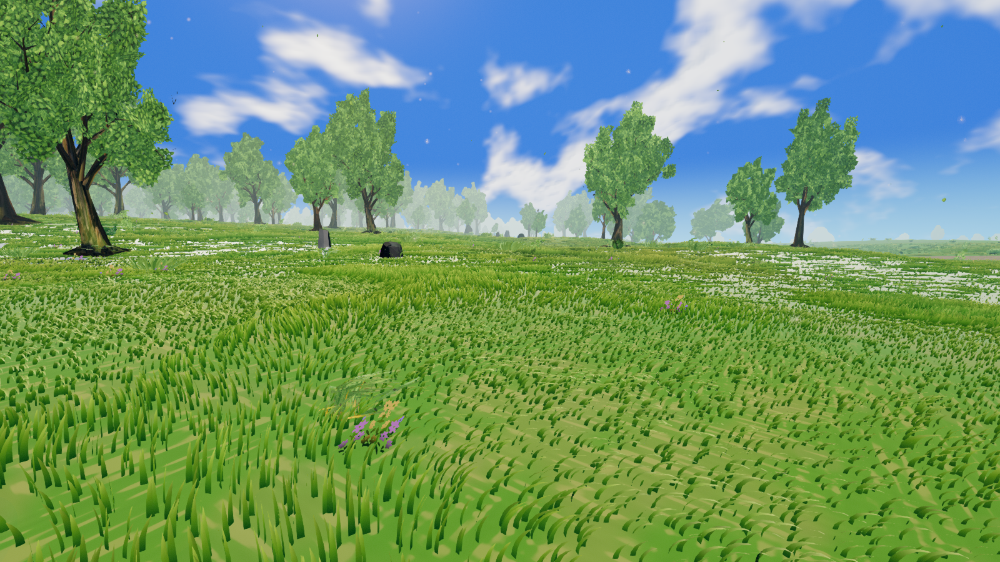
procedural · camera-cell biome 5 · X 15319, Z 231 · player · fully settled
Original clean PNG · HUD PNG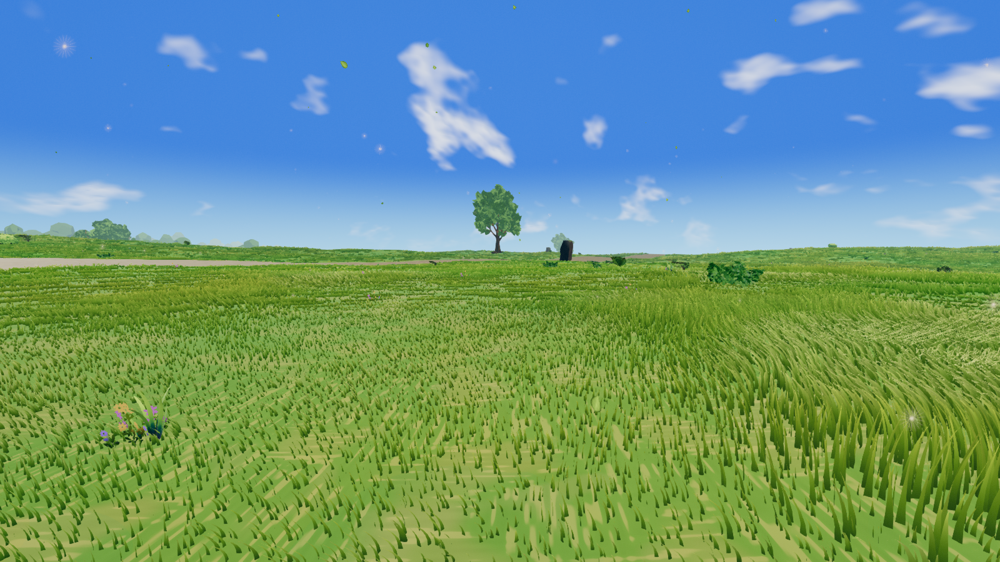
procedural · camera-cell biome 6 · X -1177, Z -1641 · player · fully settled
Original clean PNG · HUD PNG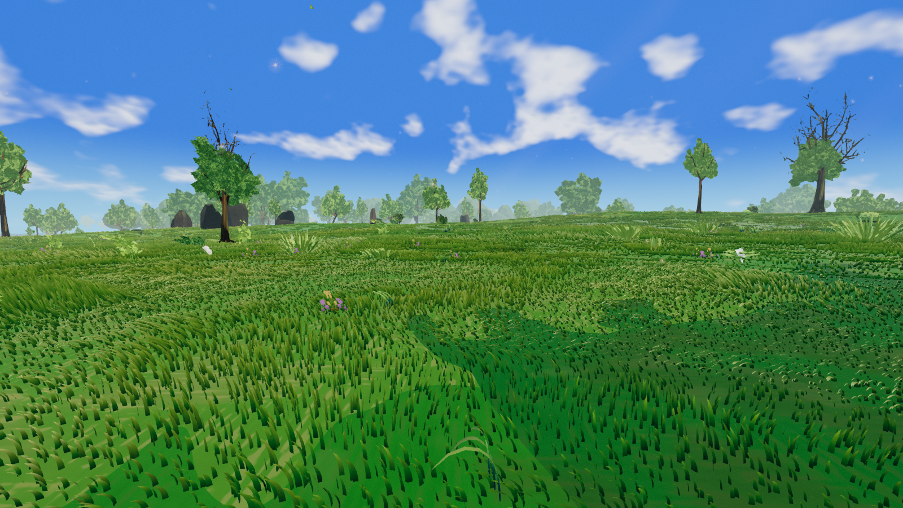
procedural · camera-cell biome 7 · X 2033, Z 2983 · player · fully settled
Original clean PNG · HUD PNG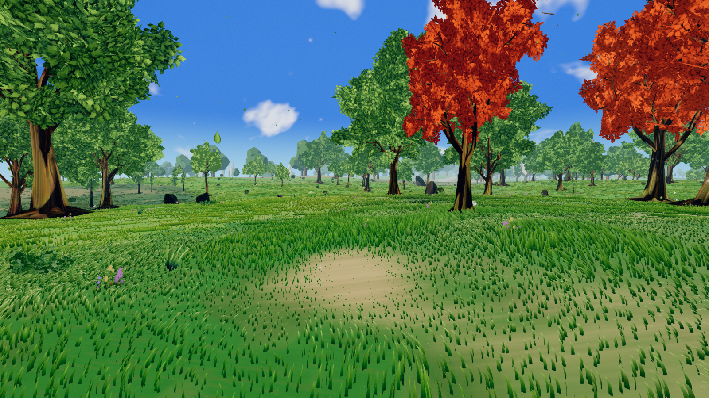
procedural · camera-cell biome 8 · X -195, Z -11997 · player · fully settled
Original clean PNG · HUD PNG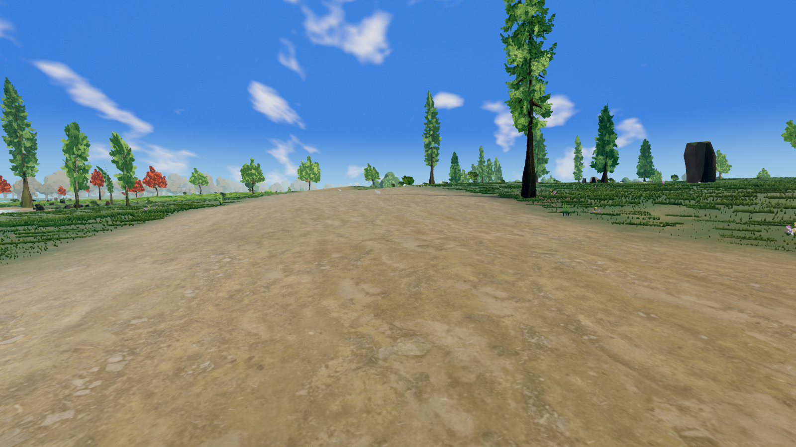
procedural · camera-cell biome 9 · X -13761, Z 7363 · player · fully settled
Original clean PNG · HUD PNG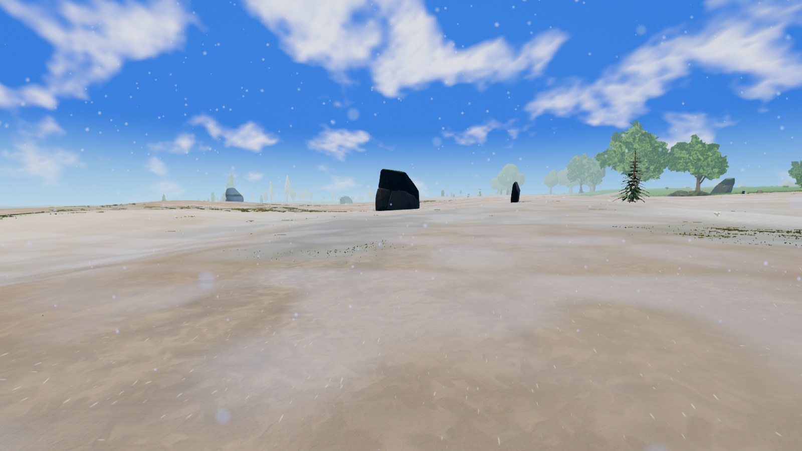
procedural · camera-cell biome 10 · X -2641, Z 13889 · player · fully settled
Original clean PNG · HUD PNG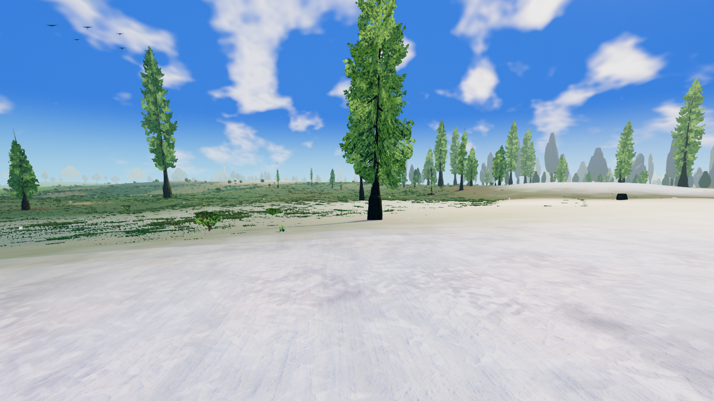
procedural · camera-cell biome 11 · X -13557, Z 14503 · player · fully settled
Original clean PNG · HUD PNG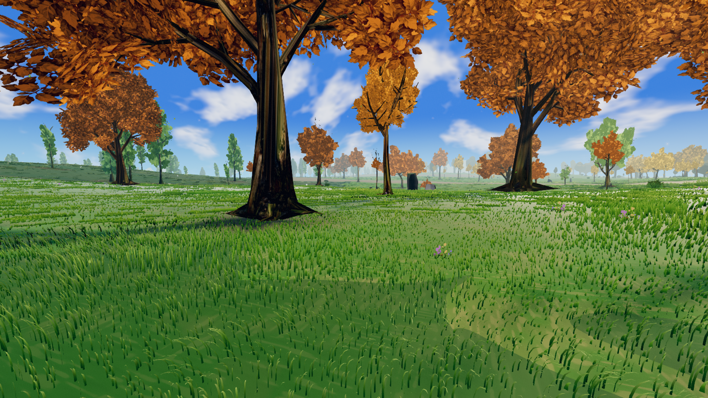
procedural · camera-cell biome 12 · X 15809, Z 8475 · player · fully settled
Original clean PNG · HUD PNG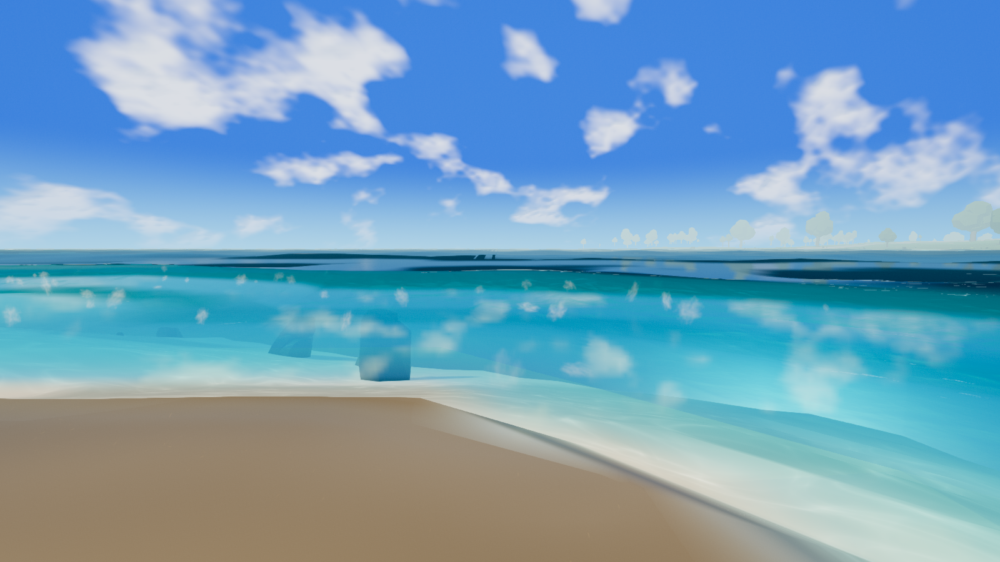
procedural · camera-cell biome 4 · X -2077, Z 1731 · player · fully settled
Original clean PNG · HUD PNG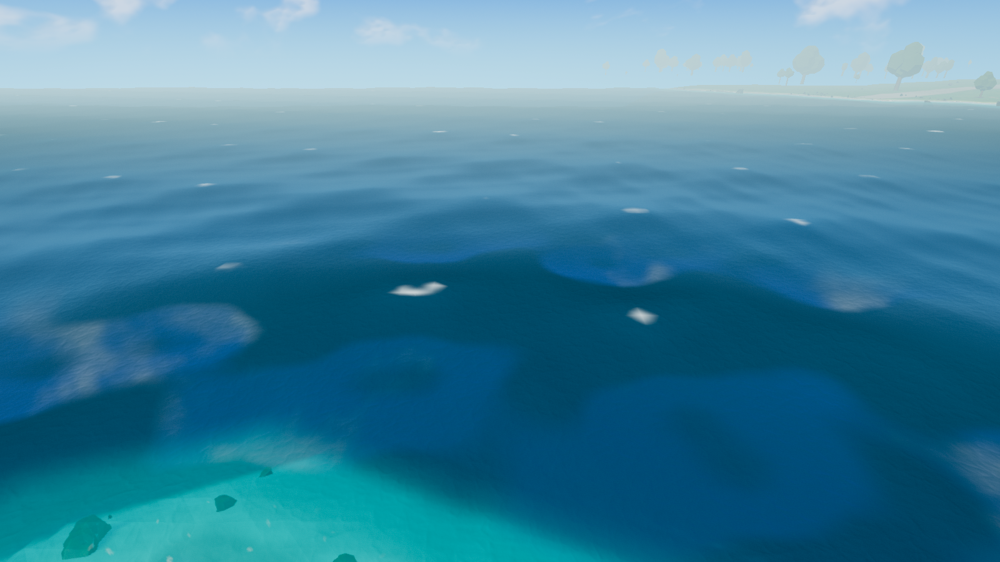
procedural · camera-cell biome 4 · X -2077, Z 1731 · fly · fully settled
Original clean PNG · HUD PNG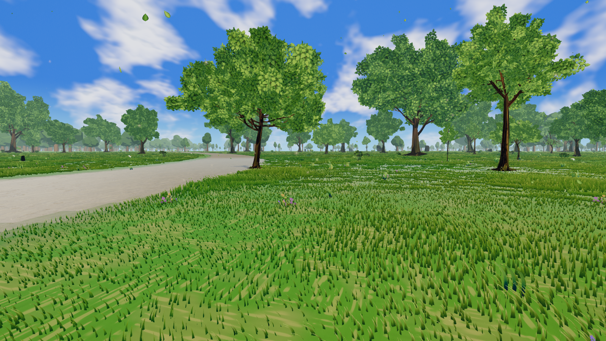
eldara · camera-cell biome 6 · X -7134127, Z 1081563 · player · fully settled
Original clean PNG · HUD PNG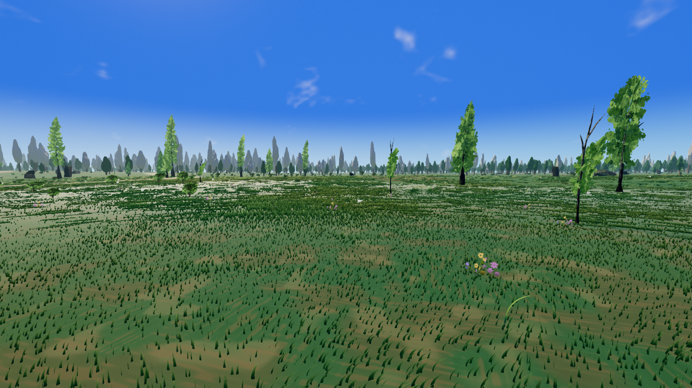
eldara · camera-cell biome 9 · X -982683, Z 371387 · player · fully settled
Original clean PNG · HUD PNG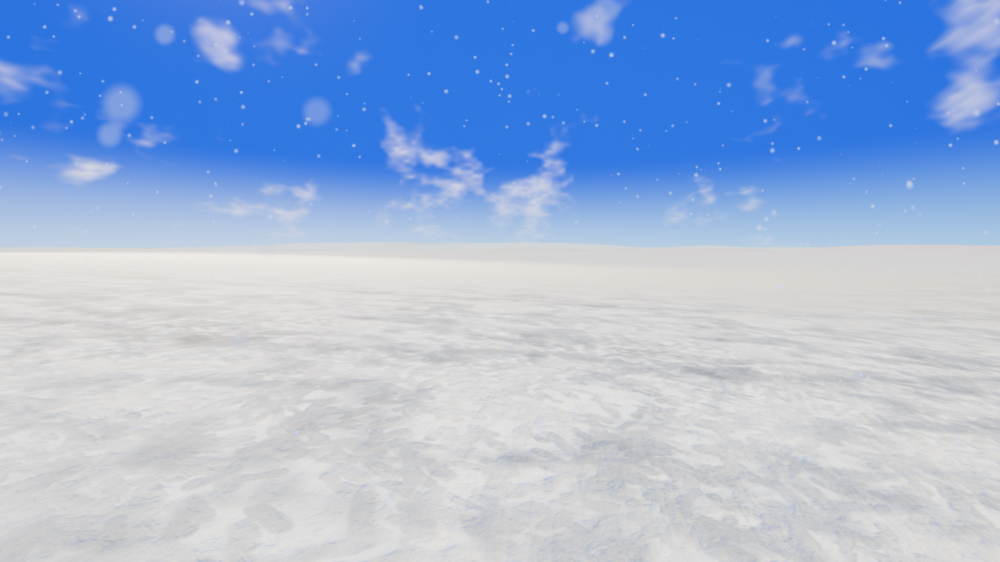
eldara · camera-cell biome 11 · X -2747061, Z 316061 · player · fully settled
Original clean PNG · HUD PNG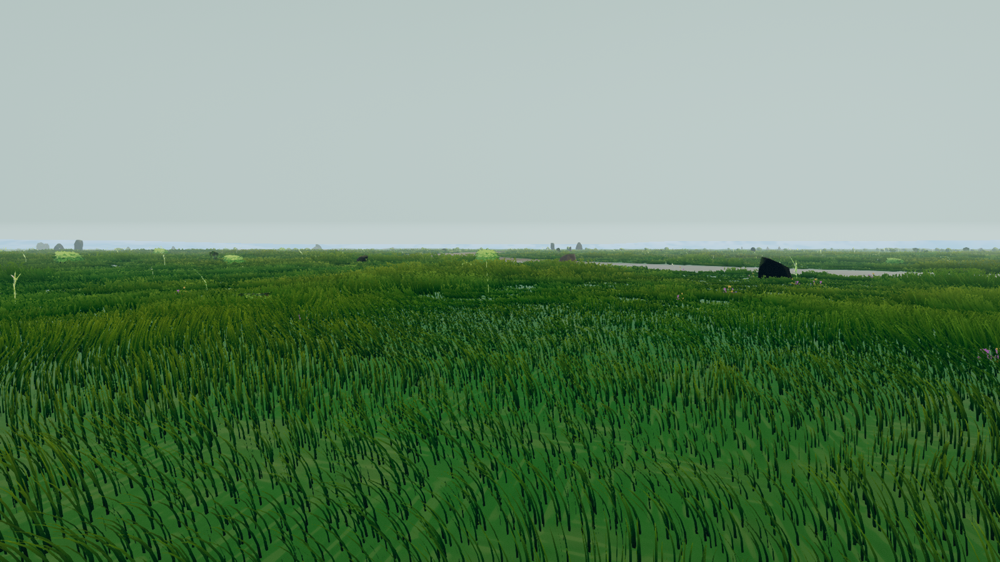
eldara · camera-cell biome 12 · X 993673, Z 1701497 · player · fully settled
Original clean PNG · HUD PNG